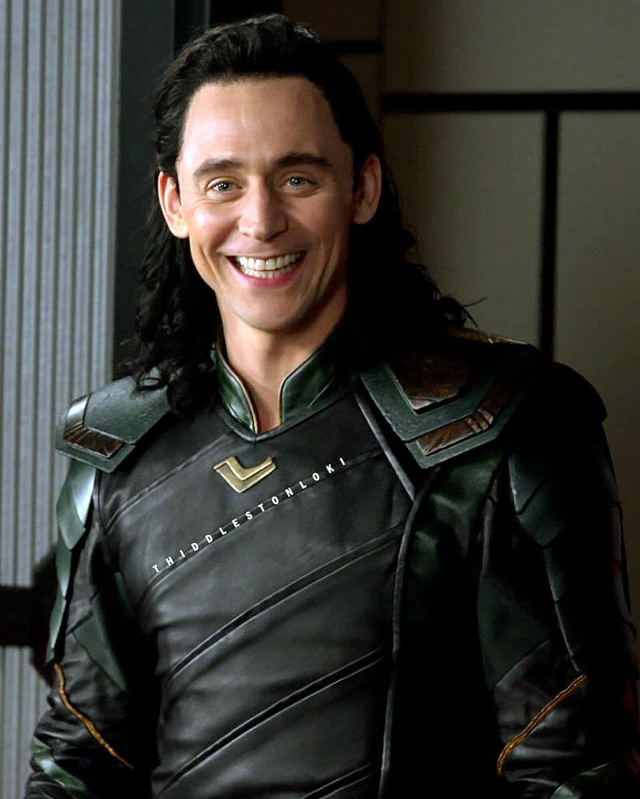

LOKI

The Asgardian god of mischief and Thor's adopted brother, based on the Norse mythological deity of the same name.[8] This is an alternate, "time-variant" version of Loki who created a new timeline in Avengers: Endgame (2019) beginning in 2012.[9] Because of this, he has not gone through the events of Thor: The Dark World (2013) or Thor: Ragnarok (2017), which reformed the previously villainous character before his death in Avengers: Infinity War (2018).[10][11] Head writer Michael Waldron compared Loki to Apple Inc. co-founder Steve Jobs since both were adopted and love being in control.[12] Hiddleston expressed interest in returning to the role to explore Loki's powers, particularly his shapeshifting, which plays into the series' exploration of identity.